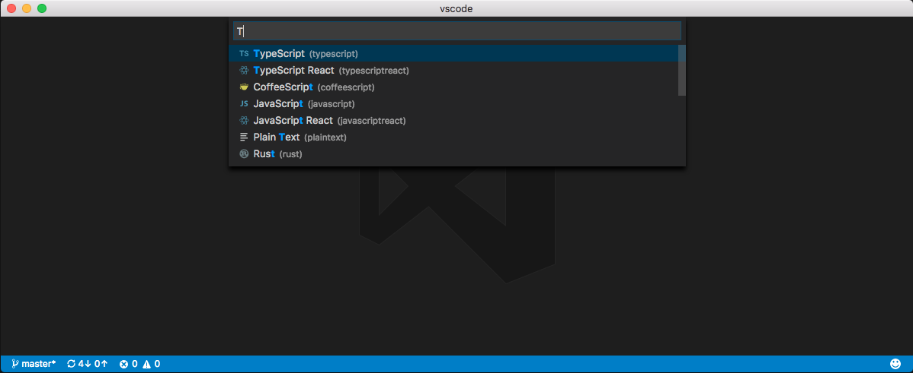

User and Workspace Settings
It is easy to configure VS Code to your liking through settings. Nearly every part of VS Code's editor, user interface, and functional behavior has options you can modify.
VS Code provides two different scopes for settings:
- User These settings apply globally to any instance of VS Code you open
-
Workspace These settings are stored inside
your workspace in a
.vscodefolder and only apply when the workspace is opened. Settings defined on this scope override the user scope.
Creating User and Workspace Settings
The menu command File >
Preferences >
Settings (Code >
Preferences > Settings on
Mac) provides entry to configure user and workspace settings.
You are provided with a list of Default Settings. Copy any
setting that you want to change to the appropriate
settings.json file. The tabs on the right let you
switch quickly between the user and workspace settings files.
You can also open the user and workspace settings from the
Command Palette
(kb(workbench.action.showCommands)) with
Preferences: Open User Settings and
Preferences: Open Workspace Settings or use
the keyboard shortcut
(kb(workbench.action.openGlobalSettings)).
In the example below, we disabled line numbers in the editor and configured line wrapping to wrap automatically based on the size of the editor.
Changes to settings are reloaded by VS Code after the modified
settings.json file is saved.
Note: Workspace settings are useful for sharing project specific settings across a team.
Settings File Locations
Depending on your platform, the user settings file is located here:
-
Windows
%APPDATA%\Code\User\settings.json -
Mac
$HOME/Library/Application Support/Code/User/settings.json -
Linux
$HOME/.config/Code/User/settings.json
The workspace setting file is located under the
.vscode folder in your project.
Default Settings
When you open settings, we show
Default Settings to search and discover
settings you are looking for. When you search using the big
Search bar, it will not only show and highlight the settings
matching your criteria, but also filter out those which are
not matching. This makes finding settings quick and easy.
There are actions available inside
Default Settings and
settings.json editors which will help you quickly
copy or update a setting.

Note: VS Code extensions can also add their own custom settings and they will be visible in the Default Settings list at runtime.
Settings groups
Default settings are represented in groups so that you can navigate them easily. It has Most Commonly Used group on the top to see the most common customizations done by VS Code users.
Here is the copy of default settings that comes with VS Code.
Language specific editor settings
To customize your editor by language, run the global command
Preferences: Configure language specific
settings...
(command id:
workbench.action.configureLanguageBasedSettings)
from the
Command Palette
(kb(workbench.action.showCommands)) which opens
the language picker. Selecting the language you want, opens
the Settings editor with the language entry where you can add
applicable settings.



If you have a file open and you want to customize the editor for this file type, click on the Language Mode in the Status Bar to the bottom-right of the VS Code window. This opens the Language Mode picker with an option Configure 'language_name' language based settings.... Selecting this opens the Settings editor with the language entry where you can add applicable settings.
You can also configure language based settings by directly
opening settings.json. You can scope them to the
workspace by placing them in the Workspace settings just like
other settings. If you have settings defined for a language in
both user and workspace scopes, then they are merged by giving
precedence to the ones defined in the workspace.
The following examples customize editor settings for language
modes typescript and markdown.
{
"[typescript]": {
"editor.formatOnSave": true,
"editor.formatOnPaste": true
},
"[markdown]": {
"editor.formatOnSave": true,
"editor.wordwrap": "on",
"editor.renderWhitespace": "all",
"editor.acceptSuggestionOnEnter": false
}
}
You can use IntelliSense in Settings editor to help you find allowed language based settings. All editor settings and some non-editor settings are supported.
Settings and security
In settings, we allow you to specify some of the executables that VS Code will run to do its work. For example, you can choose which shell the Integrated Terminal should use. For enhanced security, such settings can only be defined in user settings and not at workspace scope.
Here is the list of settings we don't support at the workspace scope:
git.pathterminal.integrated.shell.linuxterminal.integrated.shellArgs.linuxterminal.integrated.shell.osxterminal.integrated.shellArgs.osxterminal.integrated.shell.windowsterminal.integrated.shellArgs.windowsterminal.external.windowsExecterminal.external.osxExecterminal.external.linuxExec
The first time you open a workspace which defines any of these settings, VS Code will warn you and subsequently always ignore the values after that.
Copy of Default Settings
Below are the default settings and their values.
{
// Most Commonly Used
// Controls auto save of dirty files. Accepted values: 'off', 'afterDelay', 'onFocusChange' (editor loses focus), 'onWindowChange' (window loses focus). If set to 'afterDelay', you can configure the delay in 'files.autoSaveDelay'.
"files.autoSave": "off",
// Controls the font size in pixels.
"editor.fontSize": 14,
// Controls the font family.
"editor.fontFamily": "Consolas, 'Courier New', monospace",
// The number of spaces a tab is equal to. This setting is overriden based on the file contents when `editor.detectIndentation` is on.
"editor.tabSize": 4,
// Controls how the editor should render whitespace characters, possibilities are 'none', 'boundary', and 'all'. The 'boundary' option does not render single spaces between words.
"editor.renderWhitespace": "none",
// Controls the cursor style, accepted values are 'block', 'block-outline', 'line', 'line-thin', 'underline' and 'underline-thin'
"editor.cursorStyle": "line",
// The modifier to be used to add multiple cursors with the mouse. `ctrlCmd` maps to `Control` on Windows and Linux and to `Command` on OSX. The Go To Definition and Open Link mouse gestures will adapt such that they do not conflict with the multicursor modifier.
"editor.multiCursorModifier": "alt",
// Insert spaces when pressing Tab. This setting is overriden based on the file contents when `editor.detectIndentation` is on.
"editor.insertSpaces": true,
// Controls how lines should wrap. Can be:
// - 'off' (disable wrapping),
// - 'on' (viewport wrapping),
// - 'wordWrapColumn' (wrap at `editor.wordWrapColumn`) or
// - 'bounded' (wrap at minimum of viewport and `editor.wordWrapColumn`).
"editor.wordWrap": "off",
// Configure glob patterns for excluding files and folders.
"files.exclude": {
"**/.git": true,
"**/.svn": true,
"**/.hg": true,
"**/CVS": true,
"**/.DS_Store": true
},
// Configure file associations to languages (e.g. "*.extension": "html"). These have precedence over the default associations of the languages installed.
"files.associations": {},
// Editor
// Insert snippets when their prefix matches. Works best when 'quickSuggestions' aren't enabled.
"editor.tabCompletion": false,
// Controls the font family.
"editor.fontFamily": "Consolas, 'Courier New', monospace",
// Controls the font weight.
"editor.fontWeight": "normal",
// Controls the font size in pixels.
"editor.fontSize": 14,
// Controls the line height. Use 0 to compute the lineHeight from the fontSize.
"editor.lineHeight": 0,
// Controls the letter spacing in pixels.
"editor.letterSpacing": 0,
// Controls the display of line numbers. Possible values are 'on', 'off', and 'relative'. 'relative' shows the line count from the current cursor position.
"editor.lineNumbers": "on",
// Columns at which to show vertical rulers
"editor.rulers": [],
// Characters that will be used as word separators when doing word related navigations or operations
"editor.wordSeparators": "`~!@#$%^&*()-=+[{]}\\|;:'\",.<>/?",
// The number of spaces a tab is equal to. This setting is overriden based on the file contents when `editor.detectIndentation` is on.
"editor.tabSize": 4,
// Insert spaces when pressing Tab. This setting is overriden based on the file contents when `editor.detectIndentation` is on.
"editor.insertSpaces": true,
// When opening a file, `editor.tabSize` and `editor.insertSpaces` will be detected based on the file contents.
"editor.detectIndentation": true,
// Controls if selections have rounded corners
"editor.roundedSelection": true,
// Controls if the editor will scroll beyond the last line
"editor.scrollBeyondLastLine": true,
// Controls if the editor will scroll using an animation
"editor.smoothScrolling": false,
// Controls if the minimap is shown
"editor.minimap.enabled": true,
// Controls whether the minimap slider is automatically hidden. Possible values are 'always' and 'mouseover'
"editor.minimap.showSlider": "mouseover",
// Render the actual characters on a line (as opposed to color blocks)
"editor.minimap.renderCharacters": true,
// Limit the width of the minimap to render at most a certain number of columns
"editor.minimap.maxColumn": 120,
// Controls if we seed the search string in Find Widget from editor selection
"editor.find.seedSearchStringFromSelection": true,
// Controls if Find in Selection flag is turned on when multiple characters or lines of text are selected in the editor
"editor.find.autoFindInSelection": false,
// Controls how lines should wrap. Can be:
// - 'off' (disable wrapping),
// - 'on' (viewport wrapping),
// - 'wordWrapColumn' (wrap at `editor.wordWrapColumn`) or
// - 'bounded' (wrap at minimum of viewport and `editor.wordWrapColumn`).
"editor.wordWrap": "off",
// Controls the wrapping column of the editor when `editor.wordWrap` is 'wordWrapColumn' or 'bounded'.
"editor.wordWrapColumn": 80,
// Controls the indentation of wrapped lines. Can be one of 'none', 'same' or 'indent'.
"editor.wrappingIndent": "same",
// A multiplier to be used on the `deltaX` and `deltaY` of mouse wheel scroll events
"editor.mouseWheelScrollSensitivity": 1,
// The modifier to be used to add multiple cursors with the mouse. `ctrlCmd` maps to `Control` on Windows and Linux and to `Command` on OSX. The Go To Definition and Open Link mouse gestures will adapt such that they do not conflict with the multicursor modifier.
"editor.multiCursorModifier": "alt",
// Controls if suggestions should automatically show up while typing
"editor.quickSuggestions": {
"other": true,
"comments": false,
"strings": false
},
// Controls the delay in ms after which quick suggestions will show up
"editor.quickSuggestionsDelay": 10,
// Enables pop-up that shows parameter documentation and type information as you type
"editor.parameterHints": true,
// Controls if the editor should automatically close brackets after opening them
"editor.autoClosingBrackets": true,
// Controls if the editor should automatically format the line after typing
"editor.formatOnType": false,
// Controls if the editor should automatically format the pasted content. A formatter must be available and the formatter should be able to format a range in a document.
"editor.formatOnPaste": false,
// Controls if the editor should automatically adjust the indentation when users type, paste or move lines. Indentation rules of the language must be available.
"editor.autoIndent": true,
// Controls if suggestions should automatically show up when typing trigger characters
"editor.suggestOnTriggerCharacters": true,
// Controls if suggestions should be accepted on 'Enter' - in addition to 'Tab'. Helps to avoid ambiguity between inserting new lines or accepting suggestions. The value 'smart' means only accept a suggestion with Enter when it makes a textual change
"editor.acceptSuggestionOnEnter": "on",
// Controls if suggestions should be accepted on commit characters. For instance in JavaScript the semi-colon (';') can be a commit character that accepts a suggestion and types that character.
"editor.acceptSuggestionOnCommitCharacter": true,
// Controls whether snippets are shown with other suggestions and how they are sorted.
"editor.snippetSuggestions": "inline",
// Controls whether copying without a selection copies the current line.
"editor.emptySelectionClipboard": true,
// Controls whether completions should be computed based on words in the document.
"editor.wordBasedSuggestions": true,
// Font size for the suggest widget
"editor.suggestFontSize": 0,
// Line height for the suggest widget
"editor.suggestLineHeight": 0,
// Controls whether the editor should highlight similar matches to the selection
"editor.selectionHighlight": true,
// Controls whether the editor should highlight semantic symbol occurrences
"editor.occurrencesHighlight": true,
// Controls the number of decorations that can show up at the same position in the overview ruler
"editor.overviewRulerLanes": 3,
// Controls if a border should be drawn around the overview ruler.
"editor.overviewRulerBorder": true,
// Control the cursor animation style, possible values are 'blink', 'smooth', 'phase', 'expand' and 'solid'
"editor.cursorBlinking": "blink",
// Zoom the font of the editor when using mouse wheel and holding Ctrl
"editor.mouseWheelZoom": false,
// Controls the cursor style, accepted values are 'block', 'block-outline', 'line', 'line-thin', 'underline' and 'underline-thin'
"editor.cursorStyle": "line",
// Enables font ligatures
"editor.fontLigatures": false,
// Controls if the cursor should be hidden in the overview ruler.
"editor.hideCursorInOverviewRuler": false,
// Controls how the editor should render whitespace characters, possibilities are 'none', 'boundary', and 'all'. The 'boundary' option does not render single spaces between words.
"editor.renderWhitespace": "none",
// Controls whether the editor should render control characters
"editor.renderControlCharacters": false,
// Controls whether the editor should render indent guides
"editor.renderIndentGuides": true,
// Controls how the editor should render the current line highlight, possibilities are 'none', 'gutter', 'line', and 'all'.
"editor.renderLineHighlight": "line",
// Controls if the editor shows code lenses
"editor.codeLens": true,
// Controls whether the editor has code folding enabled
"editor.folding": true,
// Controls whether the fold controls on the gutter are automatically hidden.
"editor.showFoldingControls": "mouseover",
// Highlight matching brackets when one of them is selected.
"editor.matchBrackets": true,
// Controls whether the editor should render the vertical glyph margin. Glyph margin is mostly used for debugging.
"editor.glyphMargin": true,
// Inserting and deleting whitespace follows tab stops
"editor.useTabStops": true,
// Remove trailing auto inserted whitespace
"editor.trimAutoWhitespace": true,
// Keep peek editors open even when double clicking their content or when hitting Escape.
"editor.stablePeek": false,
// Controls if the editor should allow to move selections via drag and drop.
"editor.dragAndDrop": true,
// Controls whether the editor should run in a mode where it is optimized for screen readers.
"editor.accessibilitySupport": "auto",
// Controls whether the editor should detect links and make them clickable
"editor.links": true,
// Controls whether the editor should render the inline color decorators and color picker.
"editor.colorDecorators": true,
// Controls if the diff editor shows the diff side by side or inline
"diffEditor.renderSideBySide": true,
// Controls if the diff editor shows changes in leading or trailing whitespace as diffs
"diffEditor.ignoreTrimWhitespace": true,
// Controls if the diff editor shows +/- indicators for added/removed changes
"diffEditor.renderIndicators": true,
// Format a file on save. A formatter must be available, the file must not be auto-saved, and editor must not be shutting down.
"editor.formatOnSave": false,
// Overrides editor colors and font style from the currently selected color theme.
"editor.tokenColorCustomizations": {},
// Workbench
// Controls if opened editors should show in tabs or not.
"workbench.editor.showTabs": true,
// Controls the position of the editor's tabs close buttons or disables them when set to 'off'.
"workbench.editor.tabCloseButton": "right",
// Controls if opened editors should show with an icon or not. This requires an icon theme to be enabled as well.
"workbench.editor.showIcons": true,
// Controls if opened editors show as preview. Preview editors are reused until they are kept (e.g. via double click or editing).
"workbench.editor.enablePreview": true,
// Controls if opened editors from Quick Open show as preview. Preview editors are reused until they are kept (e.g. via double click or editing).
"workbench.editor.enablePreviewFromQuickOpen": true,
// Controls where editors open. Select 'left' or 'right' to open editors to the left or right of the current active one. Select 'first' or 'last' to open editors independently from the currently active one.
"workbench.editor.openPositioning": "right",
// Controls if an editor is revealed in any of the visible groups if opened. If disabled, an editor will prefer to open in the currently active editor group. If enabled, an already opened editor will be revealed instead of opened again in the currently active editor group. Note that there are some cases where this setting is ignored, e.g. when forcing an editor to open in a specific group or to the side of the currently active group.
"workbench.editor.revealIfOpen": false,
// Controls if the number of recently used commands to keep in history for the command palette. Set to 0 to disable command history.
"workbench.commandPalette.history": 50,
// Controls if the last typed input to the command palette should be restored when opening it the next time.
"workbench.commandPalette.preserveInput": false,
// Controls if Quick Open should close automatically once it loses focus.
"workbench.quickOpen.closeOnFocusLost": true,
// Controls if opening settings also opens an editor showing all default settings.
"workbench.settings.openDefaultSettings": true,
// Controls the location of the sidebar. It can either show on the left or right of the workbench.
"workbench.sideBar.location": "left",
// Controls the visibility of the status bar at the bottom of the workbench.
"workbench.statusBar.visible": true,
// Controls the visibility of the activity bar in the workbench.
"workbench.activityBar.visible": true,
// Controls if editors showing a file should close automatically when the file is deleted or renamed by some other process. Disabling this will keep the editor open as dirty on such an event. Note that deleting from within the application will always close the editor and that dirty files will never close to preserve your data.
"workbench.editor.closeOnFileDelete": true,
// When enabled, will show the watermark tips when no editor is open.
"workbench.tips.enabled": true,
// Controls which editor is shown at startup, if none is restored from the previous session. Select 'none' to start without an editor, 'welcomePage' to open the Welcome page (default), 'newUntitledFile' to open a new untitled file (only opening an empty workspace).
"workbench.startupEditor": "welcomePage",
// Specifies the color theme used in the workbench.
"workbench.colorTheme": "Default Dark+",
// Specifies the icon theme used in the workbench or 'null' to not show any file icons.
"workbench.iconTheme": "vs-seti",
// Overrides colors from the currently selected color theme.
"workbench.colorCustomizations": {},
// Window
// Controls if files should open in a new window.
// - default: files will open in the window with the files' folder open or the last active window unless opened via the dock or from finder (macOS only)
// - on: files will open in a new window
// - off: files will open in the window with the files' folder open or the last active window
// Note that there can still be cases where this setting is ignored (e.g. when using the -new-window or -reuse-window command line option).
"window.openFilesInNewWindow": "off",
// Controls if folders should open in a new window or replace the last active window.
// - default: folders will open in a new window unless a folder is picked from within the application (e.g. via the File menu)
// - on: folders will open in a new window
// - off: folders will replace the last active window
// Note that there can still be cases where this setting is ignored (e.g. when using the -new-window or -reuse-window command line option).
"window.openFoldersInNewWindow": "default",
// Controls how windows are being reopened after a restart. Select 'none' to always start with an empty workspace, 'one' to reopen the last window you worked on, 'folders' to reopen all windows that had folders opened or 'all' to reopen all windows of your last session.
"window.restoreWindows": "one",
// Controls if a window should restore to full screen mode if it was exited in full screen mode.
"window.restoreFullscreen": false,
// Adjust the zoom level of the window. The original size is 0 and each increment above (e.g. 1) or below (e.g. -1) represents zooming 20% larger or smaller. You can also enter decimals to adjust the zoom level with a finer granularity.
"window.zoomLevel": 0,
// Controls the window title based on the active editor. Variables are substituted based on the context:
// ${activeEditorShort}: e.g. myFile.txt
// ${activeEditorMedium}: e.g. myFolder/myFile.txt
// ${activeEditorLong}: e.g. /Users/Development/myProject/myFolder/myFile.txt
// ${folderName}: e.g. myFolder
// ${folderPath}: e.g. /Users/Development/myFolder
// ${rootName}: e.g. myFolder1, myFolder2, myFolder3
// ${rootPath}: e.g. /Users/Development/myWorkspace
// ${appName}: e.g. VS Code
// ${dirty}: a dirty indicator if the active editor is dirty
// ${separator}: a conditional separator (" - ") that only shows when surrounded by variables with values
"window.title": "${dirty}${activeEditorShort}${separator}${rootName}${separator}${appName}",
// Controls the dimensions of opening a new window when at least one window is already opened. By default, a new window will open in the center of the screen with small dimensions. When set to 'inherit', the window will get the same dimensions as the last window that was active. When set to 'maximized', the window will open maximized and fullscreen if configured to 'fullscreen'. Note that this setting does not have an impact on the first window that is opened. The first window will always restore the size and location as you left it before closing.
"window.newWindowDimensions": "default",
// Controls if closing the last editor should also close the window. This setting only applies for windows that do not show folders.
"window.closeWhenEmpty": false,
// Control the visibility of the menu bar. A setting of 'toggle' means that the menu bar is hidden and a single press of the Alt key will show it. By default, the menu bar will be visible, unless the window is full screen.
"window.menuBarVisibility": "default",
// If enabled, the main menus can be opened via Alt-key shortcuts. Disabling mnemonics allows to bind these Alt-key shortcuts to editor commands instead.
"window.enableMenuBarMnemonics": true,
// If enabled, will automatically change to high contrast theme if Windows is using a high contrast theme, and to dark theme when switching away from a Windows high contrast theme.
"window.autoDetectHighContrast": true,
// Files
// Configure glob patterns for excluding files and folders.
"files.exclude": {
"**/.git": true,
"**/.svn": true,
"**/.hg": true,
"**/CVS": true,
"**/.DS_Store": true
},
// Configure file associations to languages (e.g. "*.extension": "html"). These have precedence over the default associations of the languages installed.
"files.associations": {},
// The default character set encoding to use when reading and writing files.
"files.encoding": "utf8",
// When enabled, will attempt to guess the character set encoding when opening files
"files.autoGuessEncoding": false,
// The default end of line character. Use \n for LF and \r\n for CRLF.
"files.eol": "\r\n",
// When enabled, will trim trailing whitespace when saving a file.
"files.trimTrailingWhitespace": false,
// When enabled, insert a final new line at the end of the file when saving it.
"files.insertFinalNewline": false,
// Controls auto save of dirty files. Accepted values: 'off', 'afterDelay', 'onFocusChange' (editor loses focus), 'onWindowChange' (window loses focus). If set to 'afterDelay', you can configure the delay in 'files.autoSaveDelay'.
"files.autoSave": "off",
// Controls the delay in ms after which a dirty file is saved automatically. Only applies when 'files.autoSave' is set to 'afterDelay'
"files.autoSaveDelay": 1000,
// Configure glob patterns of file paths to exclude from file watching. Patterns must match on absolute paths (i.e. prefix with ** or the full path to match properly). Changing this setting requires a restart. When you experience Code consuming lots of cpu time on startup, you can exclude large folders to reduce the initial load.
"files.watcherExclude": {
"**/.git/objects/**": true,
"**/.git/subtree-cache/**": true,
"**/node_modules/*/**": true
},
// Controls whether unsaved files are remembered between sessions, allowing the save prompt when exiting the editor to be skipped.
"files.hotExit": "onExit",
// Use the new experimental file watcher.
"files.useExperimentalFileWatcher": false,
// The default language mode that is assigned to new files.
"files.defaultLanguage": "",
// Zen Mode
// Controls if turning on Zen Mode also puts the workbench into full screen mode.
"zenMode.fullScreen": true,
// Controls if turning on Zen Mode also hides workbench tabs.
"zenMode.hideTabs": true,
// Controls if turning on Zen Mode also hides the status bar at the bottom of the workbench.
"zenMode.hideStatusBar": true,
// Controls if turning on Zen Mode also hides the activity bar at the left of the workbench.
"zenMode.hideActivityBar": true,
// Controls if a window should restore to zen mode if it was exited in zen mode.
"zenMode.restore": false,
// File Explorer
// Number of editors shown in the Open Editors pane. Set it to 0 to hide the pane.
"explorer.openEditors.visible": 9,
// Controls if the height of the open editors section should adapt dynamically to the number of elements or not.
"explorer.openEditors.dynamicHeight": true,
// Controls if the explorer should automatically reveal and select files when opening them.
"explorer.autoReveal": true,
// Controls if the explorer should allow to move files and folders via drag and drop.
"explorer.enableDragAndDrop": true,
// Controls sorting order of files and folders in the explorer. In addition to the default sorting, you can set the order to 'mixed' (files and folders sorted combined), 'type' (by file type), 'modified' (by last modified date) or 'filesFirst' (sort files before folders).
"explorer.sortOrder": "default",
// Search
// Configure glob patterns for excluding files and folders in searches. Inherits all glob patterns from the files.exclude setting.
"search.exclude": {
"**/node_modules": true,
"**/bower_components": true
},
// Controls whether to use ripgrep in text search
"search.useRipgrep": true,
// Controls whether to use .gitignore and .ignore files by default when searching in a new workspace.
"search.useIgnoreFilesByDefault": false,
// Configure to include results from a global symbol search in the file results for Quick Open.
"search.quickOpen.includeSymbols": false,
// HTTP
// The proxy setting to use. If not set will be taken from the http_proxy and https_proxy environment variables
"http.proxy": "",
// Whether the proxy server certificate should be verified against the list of supplied CAs.
"http.proxyStrictSSL": true,
// The value to send as the 'Proxy-Authorization' header for every network request.
"http.proxyAuthorization": null,
// Update
// Configure whether you receive automatic updates from an update channel. Requires a restart after change.
"update.channel": "default",
// CSS
// Controls CSS validation and problem severities.
// Enables or disables all validations
"css.validate": true,
// When using a vendor-specific prefix make sure to also include all other vendor-specific properties
"css.lint.compatibleVendorPrefixes": "ignore",
// When using a vendor-specific prefix also include the standard property
"css.lint.vendorPrefix": "warning",
// Do not use duplicate style definitions
"css.lint.duplicateProperties": "ignore",
// Do not use empty rulesets
"css.lint.emptyRules": "warning",
// Import statements do not load in parallel
"css.lint.importStatement": "ignore",
// Do not use width or height when using padding or border
"css.lint.boxModel": "ignore",
// The universal selector (*) is known to be slow
"css.lint.universalSelector": "ignore",
// No unit for zero needed
"css.lint.zeroUnits": "ignore",
// @font-face rule must define 'src' and 'font-family' properties
"css.lint.fontFaceProperties": "warning",
// Hex colors must consist of three or six hex numbers
"css.lint.hexColorLength": "error",
// Invalid number of parameters
"css.lint.argumentsInColorFunction": "error",
// Unknown property.
"css.lint.unknownProperties": "warning",
// IE hacks are only necessary when supporting IE7 and older
"css.lint.ieHack": "ignore",
// Unknown vendor specific property.
"css.lint.unknownVendorSpecificProperties": "ignore",
// Property is ignored due to the display. E.g. with 'display: inline', the width, height, margin-top, margin-bottom, and float properties have no effect
"css.lint.propertyIgnoredDueToDisplay": "warning",
// Avoid using !important. It is an indication that the specificity of the entire CSS has gotten out of control and needs to be refactored.
"css.lint.important": "ignore",
// Avoid using 'float'. Floats lead to fragile CSS that is easy to break if one aspect of the layout changes.
"css.lint.float": "ignore",
// Selectors should not contain IDs because these rules are too tightly coupled with the HTML.
"css.lint.idSelector": "ignore",
// Traces the communication between VS Code and the CSS language server.
"css.trace.server": "off",
// SCSS (Sass)
// Controls SCSS validation and problem severities.
// Enables or disables all validations
"scss.validate": true,
// When using a vendor-specific prefix make sure to also include all other vendor-specific properties
"scss.lint.compatibleVendorPrefixes": "ignore",
// When using a vendor-specific prefix also include the standard property
"scss.lint.vendorPrefix": "warning",
// Do not use duplicate style definitions
"scss.lint.duplicateProperties": "ignore",
// Do not use empty rulesets
"scss.lint.emptyRules": "warning",
// Import statements do not load in parallel
"scss.lint.importStatement": "ignore",
// Do not use width or height when using padding or border
"scss.lint.boxModel": "ignore",
// The universal selector (*) is known to be slow
"scss.lint.universalSelector": "ignore",
// No unit for zero needed
"scss.lint.zeroUnits": "ignore",
// @font-face rule must define 'src' and 'font-family' properties
"scss.lint.fontFaceProperties": "warning",
// Hex colors must consist of three or six hex numbers
"scss.lint.hexColorLength": "error",
// Invalid number of parameters
"scss.lint.argumentsInColorFunction": "error",
// Unknown property.
"scss.lint.unknownProperties": "warning",
// IE hacks are only necessary when supporting IE7 and older
"scss.lint.ieHack": "ignore",
// Unknown vendor specific property.
"scss.lint.unknownVendorSpecificProperties": "ignore",
// Property is ignored due to the display. E.g. with 'display: inline', the width, height, margin-top, margin-bottom, and float properties have no effect
"scss.lint.propertyIgnoredDueToDisplay": "warning",
// Avoid using !important. It is an indication that the specificity of the entire CSS has gotten out of control and needs to be refactored.
"scss.lint.important": "ignore",
// Avoid using 'float'. Floats lead to fragile CSS that is easy to break if one aspect of the layout changes.
"scss.lint.float": "ignore",
// Selectors should not contain IDs because these rules are too tightly coupled with the HTML.
"scss.lint.idSelector": "ignore",
// LESS
// Controls LESS validation and problem severities.
// Enables or disables all validations
"less.validate": true,
// When using a vendor-specific prefix make sure to also include all other vendor-specific properties
"less.lint.compatibleVendorPrefixes": "ignore",
// When using a vendor-specific prefix also include the standard property
"less.lint.vendorPrefix": "warning",
// Do not use duplicate style definitions
"less.lint.duplicateProperties": "ignore",
// Do not use empty rulesets
"less.lint.emptyRules": "warning",
// Import statements do not load in parallel
"less.lint.importStatement": "ignore",
// Do not use width or height when using padding or border
"less.lint.boxModel": "ignore",
// The universal selector (*) is known to be slow
"less.lint.universalSelector": "ignore",
// No unit for zero needed
"less.lint.zeroUnits": "ignore",
// @font-face rule must define 'src' and 'font-family' properties
"less.lint.fontFaceProperties": "warning",
// Hex colors must consist of three or six hex numbers
"less.lint.hexColorLength": "error",
// Invalid number of parameters
"less.lint.argumentsInColorFunction": "error",
// Unknown property.
"less.lint.unknownProperties": "warning",
// IE hacks are only necessary when supporting IE7 and older
"less.lint.ieHack": "ignore",
// Unknown vendor specific property.
"less.lint.unknownVendorSpecificProperties": "ignore",
// Property is ignored due to the display. E.g. with 'display: inline', the width, height, margin-top, margin-bottom, and float properties have no effect
"less.lint.propertyIgnoredDueToDisplay": "warning",
// Avoid using !important. It is an indication that the specificity of the entire CSS has gotten out of control and needs to be refactored.
"less.lint.important": "ignore",
// Avoid using 'float'. Floats lead to fragile CSS that is easy to break if one aspect of the layout changes.
"less.lint.float": "ignore",
// Selectors should not contain IDs because these rules are too tightly coupled with the HTML.
"less.lint.idSelector": "ignore",
// Debug
// Allows setting breakpoint in any file
"debug.allowBreakpointsEverywhere": false,
// Automatically open explorer view on the end of a debug session
"debug.openExplorerOnEnd": false,
// Show variable values inline in editor while debugging
"debug.inlineValues": false,
// Controls if the floating debug action bar should be hidden
"debug.hideActionBar": false,
// Controls behavior of the internal debug console.
"debug.internalConsoleOptions": "openOnFirstSessionStart",
// Global debug launch configuration. Should be used as an alternative to 'launch.json' that is shared across workspaces
"launch": {},
// HTML
// Enable/disable default HTML formatter
"html.format.enable": true,
// Maximum amount of characters per line (0 = disable).
"html.format.wrapLineLength": 120,
// List of tags, comma separated, that shouldn't be reformatted. 'null' defaults to all tags listed at https://www.w3.org/TR/html5/dom.html#phrasing-content.
"html.format.unformatted": "a, abbr, acronym, b, bdo, big, br, button, cite, code, dfn, em, i, img, input, kbd, label, map, object, q, samp, select, small, span, strong, sub, sup, textarea, tt, var",
// List of tags, comma separated, where the content shouldn't be reformatted. 'null' defaults to the 'pre' tag.
"html.format.contentUnformatted": "pre",
// Indent <head> and <body> sections.
"html.format.indentInnerHtml": false,
// Whether existing line breaks before elements should be preserved. Only works before elements, not inside tags or for text.
"html.format.preserveNewLines": true,
// Maximum number of line breaks to be preserved in one chunk. Use 'null' for unlimited.
"html.format.maxPreserveNewLines": null,
// Format and indent {{#foo}} and {{/foo}}.
"html.format.indentHandlebars": false,
// End with a newline.
"html.format.endWithNewline": false,
// List of tags, comma separated, that should have an extra newline before them. 'null' defaults to "head, body, /html".
"html.format.extraLiners": "head, body, /html",
// Wrap attributes.
"html.format.wrapAttributes": "auto",
// Configures if the built-in HTML language support suggests Angular V1 tags and properties.
"html.suggest.angular1": true,
// Configures if the built-in HTML language support suggests Ionic tags, properties and values.
"html.suggest.ionic": true,
// Configures if the built-in HTML language support suggests HTML5 tags, properties and values.
"html.suggest.html5": true,
// Configures if the built-in HTML language support validates embedded scripts.
"html.validate.scripts": true,
// Configures if the built-in HTML language support validates embedded styles.
"html.validate.styles": true,
// Enable/disable autoclosing of HTML tags.
"html.autoClosingTags": true,
// Traces the communication between VS Code and the HTML language server.
"html.trace.server": "off",
// JSON
// Associate schemas to JSON files in the current project
"json.schemas": [],
// Enable/disable default JSON formatter (requires restart)
"json.format.enable": true,
// Traces the communication between VS Code and the JSON language server.
"json.trace.server": "off",
// Markdown
// A list of URLs or local paths to CSS style sheets to use from the markdown preview. Relative paths are interpreted relative to the folder open in the explorer. If there is no open folder, they are interpreted relative to the location of the markdown file. All '\' need to be written as '\\'.
"markdown.styles": [],
// Sets how YAML front matter should be rendered in the markdown preview. 'hide' removes the front matter. Otherwise, the front matter is treated as markdown content.
"markdown.previewFrontMatter": "hide",
// Sets how line-breaks are rendered in the markdown preview. Setting it to 'true' creates a <br> for every newline.
"markdown.preview.breaks": false,
// Enable or disable conversion of URL-like text to links in the markdown preview.
"markdown.preview.linkify": true,
// Controls the font family used in the markdown preview.
"markdown.preview.fontFamily": "-apple-system, BlinkMacSystemFont, 'Segoe WPC', 'Segoe UI', 'HelveticaNeue-Light', 'Ubuntu', 'Droid Sans', sans-serif",
// Controls the font size in pixels used in the markdown preview.
"markdown.preview.fontSize": 14,
// Controls the line height used in the markdown preview. This number is relative to the font size.
"markdown.preview.lineHeight": 1.6,
// Scrolls the markdown preview to reveal the currently selected line from the editor.
"markdown.preview.scrollPreviewWithEditorSelection": true,
// Mark the current editor selection in the markdown preview.
"markdown.preview.markEditorSelection": true,
// When the markdown preview is scrolled, update the view of the editor.
"markdown.preview.scrollEditorWithPreview": true,
// Double click in the markdown preview to switch to the editor.
"markdown.preview.doubleClickToSwitchToEditor": true,
// Enable debug logging for the markdown extension.
"markdown.trace": "off",
// PHP
// Configures if the built-in PHP language suggestions are enabled. The support suggests PHP globals and variables.
"php.suggest.basic": true,
// Enable/disable built-in PHP validation.
"php.validate.enable": true,
// Points to the PHP executable.
"php.validate.executablePath": null,
// Whether the linter is run on save or on type.
"php.validate.run": "onSave",
// TypeScript
// Specifies the folder path containing the tsserver and lib*.d.ts files to use.
"typescript.tsdk": null,
// Disables automatic type acquisition. Requires TypeScript >= 2.0.6.
"typescript.disableAutomaticTypeAcquisition": false,
// Specifies the path to the NPM executable used for Automatic Type Acquisition. Requires TypeScript >= 2.3.4.
"typescript.npm": null,
// Check if NPM is installed for Automatic Type Acquisition.
"typescript.check.npmIsInstalled": true,
// Enable/disable references CodeLens in JavaScript files.
"javascript.referencesCodeLens.enabled": false,
// Enable/disable references CodeLens in TypeScript files. Requires TypeScript >= 2.0.6.
"typescript.referencesCodeLens.enabled": false,
// Enable/disable implementations CodeLens. Requires TypeScript >= 2.2.0.
"typescript.implementationsCodeLens.enabled": false,
// Enables logging of the TS server to a file. This log can be used to diagnose TS Server issues. The log may contain file paths, source code, and other potentially sensitive information from your project.
"typescript.tsserver.log": "off",
// Enables tracing of messages sent to the TS server. This trace can be used to diagnose TS Server issues. The trace may contain file paths, source code, and other potentially sensitive information from your project.
"typescript.tsserver.trace": "off",
// Complete functions with their parameter signature.
"typescript.useCodeSnippetsOnMethodSuggest": false,
// Enable/disable TypeScript validation.
"typescript.validate.enable": true,
// Enable/disable default TypeScript formatter.
"typescript.format.enable": true,
// Defines space handling after a comma delimiter.
"typescript.format.insertSpaceAfterCommaDelimiter": true,
// Defines space handling after the constructor keyword. Requires TypeScript >= 2.3.0.
"typescript.format.insertSpaceAfterConstructor": false,
// Defines space handling after a semicolon in a for statement.
"typescript.format.insertSpaceAfterSemicolonInForStatements": true,
// Defines space handling after a binary operator.
"typescript.format.insertSpaceBeforeAndAfterBinaryOperators": true,
// Defines space handling after keywords in a control flow statement.
"typescript.format.insertSpaceAfterKeywordsInControlFlowStatements": true,
// Defines space handling after function keyword for anonymous functions.
"typescript.format.insertSpaceAfterFunctionKeywordForAnonymousFunctions": true,
// Defines space handling before function argument parentheses. Requires TypeScript >= 2.1.5.
"typescript.format.insertSpaceBeforeFunctionParenthesis": false,
// Defines space handling after opening and before closing non empty parenthesis.
"typescript.format.insertSpaceAfterOpeningAndBeforeClosingNonemptyParenthesis": false,
// Defines space handling after opening and before closing non empty brackets.
"typescript.format.insertSpaceAfterOpeningAndBeforeClosingNonemptyBrackets": false,
// Defines space handling after opening and before closing non empty braces. Requires TypeScript >= 2.3.0.
"typescript.format.insertSpaceAfterOpeningAndBeforeClosingNonemptyBraces": true,
// Defines space handling after opening and before closing template string braces. Requires TypeScript >= 2.0.6.
"typescript.format.insertSpaceAfterOpeningAndBeforeClosingTemplateStringBraces": false,
// Defines space handling after opening and before closing JSX expression braces. Requires TypeScript >= 2.0.6.
"typescript.format.insertSpaceAfterOpeningAndBeforeClosingJsxExpressionBraces": false,
// Defines space handling after type assertions in TypeScript. Requires TypeScript >= 2.4.
"typescript.format.insertSpaceAfterTypeAssertion": false,
// Defines whether an open brace is put onto a new line for functions or not.
"typescript.format.placeOpenBraceOnNewLineForFunctions": false,
// Defines whether an open brace is put onto a new line for control blocks or not.
"typescript.format.placeOpenBraceOnNewLineForControlBlocks": false,
// Enable/disable JavaScript validation.
"javascript.validate.enable": true,
// Enable/disable default JavaScript formatter.
"javascript.format.enable": true,
// Defines space handling after a comma delimiter.
"javascript.format.insertSpaceAfterCommaDelimiter": true,
// Defines space handling after the constructor keyword. Requires TypeScript >= 2.3.0.
"javascript.format.insertSpaceAfterConstructor": false,
// Defines space handling after a semicolon in a for statement.
"javascript.format.insertSpaceAfterSemicolonInForStatements": true,
// Defines space handling after a binary operator.
"javascript.format.insertSpaceBeforeAndAfterBinaryOperators": true,
// Defines space handling after keywords in a control flow statement.
"javascript.format.insertSpaceAfterKeywordsInControlFlowStatements": true,
// Defines space handling after function keyword for anonymous functions.
"javascript.format.insertSpaceAfterFunctionKeywordForAnonymousFunctions": true,
// Defines space handling before function argument parentheses. Requires TypeScript >= 2.1.5.
"javascript.format.insertSpaceBeforeFunctionParenthesis": false,
// Defines space handling after opening and before closing non empty parenthesis.
"javascript.format.insertSpaceAfterOpeningAndBeforeClosingNonemptyParenthesis": false,
// Defines space handling after opening and before closing non empty brackets.
"javascript.format.insertSpaceAfterOpeningAndBeforeClosingNonemptyBrackets": false,
// Defines space handling after opening and before closing non empty braces. Requires TypeScript >= 2.3.0.
"javascript.format.insertSpaceAfterOpeningAndBeforeClosingNonemptyBraces": true,
// Defines space handling after opening and before closing template string braces. Requires TypeScript >= 2.0.6.
"javascript.format.insertSpaceAfterOpeningAndBeforeClosingTemplateStringBraces": false,
// Defines space handling after opening and before closing JSX expression braces. Requires TypeScript >= 2.0.6.
"javascript.format.insertSpaceAfterOpeningAndBeforeClosingJsxExpressionBraces": false,
// Defines whether an open brace is put onto a new line for functions or not.
"javascript.format.placeOpenBraceOnNewLineForFunctions": false,
// Defines whether an open brace is put onto a new line for control blocks or not.
"javascript.format.placeOpenBraceOnNewLineForControlBlocks": false,
// Enable/disable auto JSDoc comments
"jsDocCompletion.enabled": true,
// Enable/disable semantic checking of JavaScript files. Existing jsconfig.json or tsconfig.json files override this setting. Requires TypeScript >=2.3.1.
"javascript.implicitProjectConfig.checkJs": false,
// Enable/disable including unique names from the file in JavaScript suggestion lists.
"javascript.nameSuggestions": true,
// Controls whether auto detection of tsc tasks is on or off.
"typescript.tsc.autoDetect": "on",
// Extensions
// Automatically update extensions
"extensions.autoUpdate": true,
// Ignore extension recommendations
"extensions.ignoreRecommendations": false,
// External Terminal
// Customizes what kind of terminal to launch.
"terminal.explorerKind": "integrated",
// Customizes which terminal to run on Windows.
"terminal.external.windowsExec": "%COMSPEC%",
// Customizes which terminal application to run on OS X.
"terminal.external.osxExec": "Terminal.app",
// Customizes which terminal to run on Linux.
"terminal.external.linuxExec": "xterm",
// Integrated Terminal
// The path of the shell that the terminal uses on Linux.
"terminal.integrated.shell.linux": "sh",
// The command line arguments to use when on the Linux terminal.
"terminal.integrated.shellArgs.linux": [],
// The path of the shell that the terminal uses on OS X.
"terminal.integrated.shell.osx": "sh",
// The command line arguments to use when on the OS X terminal.
"terminal.integrated.shellArgs.osx": [
"-l"
],
// The path of the shell that the terminal uses on Windows. When using shells shipped with Windows (cmd, PowerShell or Bash on Ubuntu).
"terminal.integrated.shell.windows": "C:\\WINDOWS\\System32\\WindowsPowerShell\\v1.0\\powershell.exe",
// The command line arguments to use when on the Windows terminal.
"terminal.integrated.shellArgs.windows": [],
// When set, this will prevent the context menu from appearing when right clicking within the terminal, instead it will copy when there is a selection and paste when there is no selection.
"terminal.integrated.rightClickCopyPaste": true,
// Controls the font family of the terminal, this defaults to editor.fontFamily's value.
"terminal.integrated.fontFamily": "",
// Controls whether font ligatures are enabled in the terminal.
"terminal.integrated.fontLigatures": false,
// Controls the font size in pixels of the terminal.
"terminal.integrated.fontSize": 14,
// Controls the line height of the terminal, this number is multipled by the terminal font size to get the actual line-height in pixels.
"terminal.integrated.lineHeight": 1.2,
// Whether to enable bold text within the terminal, this requires support from the terminal shell.
"terminal.integrated.enableBold": true,
// Controls whether the terminal cursor blinks.
"terminal.integrated.cursorBlinking": false,
// Controls the style of terminal cursor.
"terminal.integrated.cursorStyle": "block",
// Controls the maximum amount of lines the terminal keeps in its buffer.
"terminal.integrated.scrollback": 1000,
// Controls whether locale variables are set at startup of the terminal, this defaults to true on OS X, false on other platforms.
"terminal.integrated.setLocaleVariables": false,
// An explicit start path where the terminal will be launched, this is used as the current working directory (cwd) for the shell process. This may be particularly useful in workspace settings if the root directory is not a convenient cwd.
"terminal.integrated.cwd": "",
// Whether to confirm on exit if there are active terminal sessions.
"terminal.integrated.confirmOnExit": false,
// A set of command IDs whose keybindings will not be sent to the shell and instead always be handled by Code. This allows the use of keybindings that would normally be consumed by the shell to act the same as when the terminal is not focused, for example ctrl+p to launch Quick Open.
"terminal.integrated.commandsToSkipShell": [
"editor.action.toggleTabFocusMode",
"workbench.action.debug.continue",
"workbench.action.debug.pause",
"workbench.action.debug.restart",
"workbench.action.debug.run",
"workbench.action.debug.start",
"workbench.action.debug.stop",
"workbench.action.focusActiveEditorGroup",
"workbench.action.focusFirstEditorGroup",
"workbench.action.focusSecondEditorGroup",
"workbench.action.focusThirdEditorGroup",
"workbench.action.navigateDown",
"workbench.action.navigateLeft",
"workbench.action.navigateRight",
"workbench.action.navigateUp",
"workbench.action.openNextRecentlyUsedEditorInGroup",
"workbench.action.openPreviousRecentlyUsedEditorInGroup",
"workbench.action.quickOpen",
"workbench.action.quickOpenView",
"workbench.action.showCommands",
"workbench.action.terminal.clear",
"workbench.action.terminal.copySelection",
"workbench.action.terminal.deleteWordLeft",
"workbench.action.terminal.deleteWordRight",
"workbench.action.terminal.findWidget.history.showNext",
"workbench.action.terminal.findWidget.history.showPrevious",
"workbench.action.terminal.focus",
"workbench.action.terminal.focusAtIndex1",
"workbench.action.terminal.focusAtIndex2",
"workbench.action.terminal.focusAtIndex3",
"workbench.action.terminal.focusAtIndex4",
"workbench.action.terminal.focusAtIndex5",
"workbench.action.terminal.focusAtIndex6",
"workbench.action.terminal.focusAtIndex7",
"workbench.action.terminal.focusAtIndex8",
"workbench.action.terminal.focusAtIndex9",
"workbench.action.terminal.focusFindWidget",
"workbench.action.terminal.focusNext",
"workbench.action.terminal.focusPrevious",
"workbench.action.terminal.hideFindWidget",
"workbench.action.terminal.kill",
"workbench.action.terminal.new",
"workbench.action.terminal.paste",
"workbench.action.terminal.runActiveFile",
"workbench.action.terminal.runSelectedText",
"workbench.action.terminal.scrollDown",
"workbench.action.terminal.scrollDownPage",
"workbench.action.terminal.scrollToBottom",
"workbench.action.terminal.scrollToTop",
"workbench.action.terminal.scrollUp",
"workbench.action.terminal.scrollUpPage",
"workbench.action.terminal.selectAll",
"workbench.action.terminal.toggleTerminal"
],
// Object with environment variables that will be added to the VS Code process to be used by the terminal on OS X
"terminal.integrated.env.osx": {},
// Object with environment variables that will be added to the VS Code process to be used by the terminal on Linux
"terminal.integrated.env.linux": {},
// Object with environment variables that will be added to the VS Code process to be used by the terminal on Windows
"terminal.integrated.env.windows": {},
// Problems Panel
// Controls if Problems view should automatically reveal files when opening them
"problems.autoReveal": true,
// Telemetry
// Enable usage data and errors to be sent to Microsoft.
"telemetry.enableTelemetry": true,
// Enable crash reports to be sent to Microsoft.
// This option requires restart to take effect.
"telemetry.enableCrashReporter": true,
// Emmet
// Shows expanded emmet abbreviations as suggestions.
// The option "inMarkupAndStylesheetFilesOnly" applies to html, haml, jade, slim, xml, xsl, css, scss, sass, less and stylus.
// The option "always" applies to all parts of the file regardless of markup/css.
"emmet.showExpandedAbbreviation": "always",
// Shows possible emmet abbreviations as suggestions. Not applicable in stylesheets or when emmet.showExpandedAbbreviation is set to "never".
"emmet.showAbbreviationSuggestions": true,
// Enable emmet abbreviations in languages that are not supported by default. Add a mapping here between the language and emmet supported language.
// Eg: {"vue-html": "html", "javascript": "javascriptreact"}
"emmet.includeLanguages": {},
// Variables to be used in emmet snippets
"emmet.variables": {},
// Define profile for specified syntax or use your own profile with specific rules.
"emmet.syntaxProfiles": {},
// An array of languages where emmet abbreviations should not be expanded.
"emmet.excludeLanguages": [
"markdown"
],
// Path to a folder containing emmet profiles and snippets.'
"emmet.extensionsPath": null,
// When enabled, emmet abbreviations are expanded when pressing TAB.
"emmet.triggerExpansionOnTab": false,
// Preferences used to modify behavior of some actions and resolvers of Emmet.
"emmet.preferences": {},
// If true, then emmet suggestions will show up as snippets allowing you to order them as per editor.snippetSuggestions setting.
"emmet.showSuggestionsAsSnippets": false,
// Default Configuration Overrides
// Configure editor settings to be overridden for [go] language.
"[go]": {
"editor.insertSpaces": false
},
// Configure editor settings to be overridden for [json] language.
"[json]": {
"editor.quickSuggestions": {
"strings": true
}
},
// Configure editor settings to be overridden for [makefile] language.
"[makefile]": {
"editor.insertSpaces": false
},
// Configure editor settings to be overridden for [markdown] language.
"[markdown]": {
"editor.wordWrap": "on",
"editor.quickSuggestions": false
},
// Configure editor settings to be overridden for [yaml] language.
"[yaml]": {
"editor.insertSpaces": true,
"editor.tabSize": 2
},
// Git
// Whether git is enabled
"git.enabled": true,
// Path to the git executable
"git.path": null,
// Whether auto refreshing is enabled
"git.autorefresh": true,
// Whether auto fetching is enabled
"git.autofetch": true,
// Confirm before synchronizing git repositories
"git.confirmSync": true,
// Controls the git badge counter. `all` counts all changes. `tracked` counts only the tracked changes. `off` turns it off.
"git.countBadge": "all",
// Controls what type of branches are listed when running `Checkout to...`. `all` shows all refs, `local` shows only the local branchs, `tags` shows only tags and `remote` shows only remote branches.
"git.checkoutType": "all",
// Ignores the legacy Git warning
"git.ignoreLegacyWarning": false,
// Ignores the warning when there are too many changes in a repository
"git.ignoreLimitWarning": false,
// The default location where to clone a git repository
"git.defaultCloneDirectory": null,
// Commit all changes when there are no staged changes.
"git.enableSmartCommit": false,
// Enables commit signing with GPG.
"git.enableCommitSigning": false,
// Npm
// Controls whether auto detection of npm scripts is on or off. Default is on.
"npm.autoDetect": "on",
// Run npm commands with the `--silent` option
"npm.runSilent": false,
// Merge Conflict
// Enable/disable merge conflict block CodeLens within editor
"merge-conflict.codeLens.enabled": true,
// Enable/disable merge conflict decorators within editor
"merge-conflict.decorators.enabled": true,
// Grunt
// Controls whether auto detection of Grunt tasks is on or off. Default is on.
"grunt.autoDetect": "on",
// Gulp
// Controls whether auto detection of Gulp tasks is on or off. Default is on.
"gulp.autoDetect": "on",
// Jake
// Controls whether auto detection of Jake tasks is on or off. Default is on.
"jake.autoDetect": "on"
}
Common Questions
Q: VS Code says "Unable to write settings."
A: If you try to change a setting (for
example turning on Auto Save or selecting a new Color Theme)
and you see "Unable to write settings. Please open User
Settings to correct errors/warnings in the file and try
again.", it means your settings.json file is
ill-formed or has errors. The errors can be as simple as a
missing comma or setting value. Open the Settings editor
File > Preferences >
Settings (Code >
Preferences > Settings on
Mac) (kb(workbench.action.openGlobalSettings))
and you should see the error highlighted with red squiggles.
Q: When does it make sense to use workspace settings?
A: If you're using a workspace that needs custom settings but you don't want to apply them to your other VS Code projects. A good example is language-specific linting rules.